In this article, I will develop a Model-View-Controller (MVC) application using Python Language with Flask Framework and Jinja Template.
By the end of this article, we will learn:
How to develop a Model-View-Controller (MVC) application using Python Language with Flask Framework and Jinja Template.
Connecting to the SQLite Database to persist the data, using SQLAlchemy ORM.
If you have no time to read this article, but want to try the code for yourself, GitHub location is provided here. Go ahead and clone the code.
Overview
We will build a MVC application using Python with Flask Framework and Jinja Template for a Todo Task Application in that:
Each Todo Task has id, title, description, creation date, due date, status and comments.
User can Create New Task, Update Existing Task, View All Tasks as List, View a Task and Delete a Task.
Definitions
Python is an interpreted, object-oriented, high-level programming language with dynamic semantics. Its high-level built in data structures, combined with dynamic typing and dynamic binding, make it very attractive for Rapid Application Development, as well as for use as a scripting or glue language to connect existing components together. Python supports modules and packages, which encourages program modularity and code reuse.
Flask is a web framework, it’s a Python module that lets you develop web applications easily. It’s has a small and easy-to-extend core: it’s a microframework that doesn’t include an ORM (Object Relational Manager) or such features. Flask is a web application framework written in Python. Flask is based on the Werkzeg WSGI toolkit and the Jinja2 template engine.
Jinja Template is a web template engine for the Python programming language. Jinja is a fast, expressive, extensible templating engine. Special placeholders in the template allow writing code similar to Python syntax. Then the template is passed data to render the final document.
SQLAlchemy is a library that facilitates the communication between Python programs and databases. SQLAlchemy is the Python SQL toolkit and Object Relational Mapper that gives application developers the full power and flexibility of SQL.
Microservices is an architecture that allows the developers to develop and deploy services independently. Each service running has its own process and this achieves the lightweight model to support business applications. One of the most popular types of APIs for building Microservices applications is known as “RESTful API” or “REST API”.
REpresentational State Transfer (REST) is an architectural style that defines a set of constraints to be used for creating web services. REST API is a way of accessing web services in a simple and flexible way without having any processing. All communication done via REST API uses only HTTP request.
Application Programming Interface (API) is a software intermediary that allows two applications to talk to each other. To simplify, an API delivers a user requests to a system and sends the system’s response back to a user.
Prerequisites
There are some prerequisites that are required for creating the MVC Application using Python, Flask and Jinja Template.
Familiarity with Technology and Frameworks
It is assumed that you have prior knowledge or familiarity with Python Language, Flask Framework, working with RDBMS databases and basic SQL commands, because I will not be covering the basics of these in this article.
If you are not familiar, then it is advised to get the basic knowledge of these before continuing.
Install Python
Install latest version for your platform from here. Select the latest version of Python 3 and download the Windows Installer. Click on the downloaded .exe and follow the on-screen instructions to complete the download.
Integrated Development Environment (IDE) for Code Development
You can use any Text Editor or IDE of your choice. I will be using the Visual Studio Code.
If you wish to use the Visual Studio Code, download the latest version from here. Click on the downloaded .exe and complete the installation.
You can browse and install extensions from within VS Code. Bring up the Extensions view by clicking on the Extensions icon in the Activity Bar on the side of VS Code or the View: Extensions command (Ctrl+Shift+X).
Browse for Python and click on Install button.
Create Base Project
An important concept while working with Python projects is a virtual environment. It allows you to create an isolated Python environment, where all required packages for the project are installed.
Create a Project Environment
Open command prompt and go to the folder where you want to create the Python Project and type following command:
mkdir mvc-python-flask-jinja
cd mvc-python-flask-jinja
In that folder, use the following commands (one after another) to create and activate a virtual environment named .venv:
py -3 -m venv .venv
.venv\Scripts\activate
If the activate command generates the message Activate.ps1 is not digitally signed. You cannot run this script on the current system., then you need to temporarily change the PowerShell execution policy to allow scripts to run (see About Execution Policies in the PowerShell documentation):
Set-ExecutionPolicy -ExecutionPolicy RemoteSigned -Scope Process
Import Project into Visual Studio Code IDE
There are two ways of importing the project into the Visual Studio Code IDE.
In the project folder, open the command prompt and type the command: code ., this would open the Visual Studio Code IDE and import the current project folder.
Open the Visual Studio Code IDE and navigate to File > Open Folder > <Select Project Folder>.
Activate the virtual environment in Visual Studio Code IDE
Once the code is imported, we need to activate the virtual environment in the Visual Studio Code IDE also.
In Visual Studio Code IDE, open the Command Palette (View > Command Palette or (Ctrl+Shift+P)). Then select the Python: Select Interpreter command:
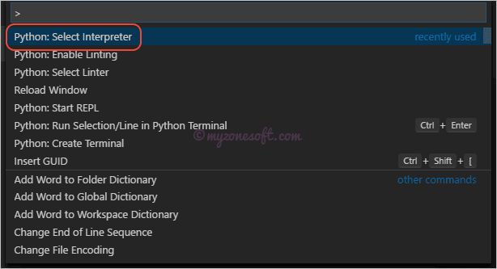
Command Palette in VS Code Editor
The command presents a list of available interpreters that VS Code can find automatically, including virtual environments. Select the folder that starts with .venv
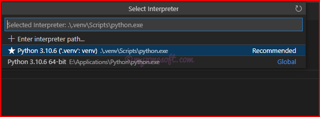
Select the .venv that starts with \.venv
Run Terminal: Create New Terminal (Ctrl+Shift+`)) from the Command Palette, which creates a terminal and automatically activates the virtual environment by running its activation script.
Install Flask and SQLAlchemy
Use the inbuilt Python package manager tool pip for installing dependencies. In your VS Code terminal enter the following one after another.
pip install flask
pip install flask-sqlalchemy
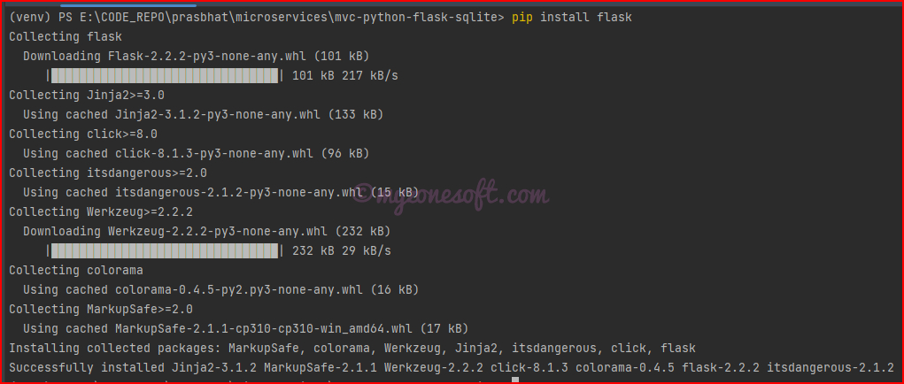
Succeesful installation of Flask
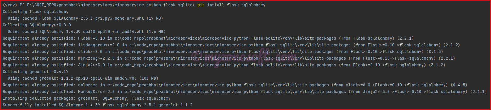
Succeesful installation of SQLAlchemy
Setting up an initial Flask server
Create a new Python file in project root directory, let us call it app.py
Import Flask class and create its instance for this application
Set the FLASK_APP Environment variable using the command
$env:FLASK_APP="app.py"
Start the server using the command
flask run
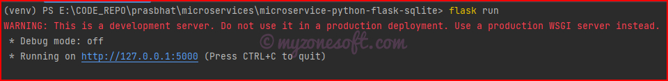
Start the server
When you navigate to http://localhost:5000/ you should see ‘Hello!’ on the browser
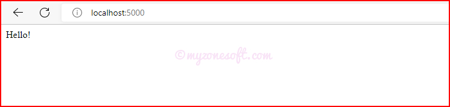
Browser displaying Hello!
Change the port
As we have seen, default port for Python Flask Application Server is 5000. However, we can change the port.
Start the server using the command:
flask run --port 8080
This would start the Python Flask Application Server on the port 8080.
Now that we have base flask app setup complete, lets dive in and start designing our Todo Task Application project.
Using HTML templates
Flask provides a render_template() helper function that allows use of the Jinja template engine. This will make managing HTML much easier by writing your HTML code in .html files as well as using python logic in your HTML code.
The index() view function returns the result of calling render_template() with index.html as an argument, this tells render_template() to look for a file called index.html in the templates folder.
Opening the URL http://localhost:5000/ in your browser will result in the debugger page informing you that the index.html template was not found.
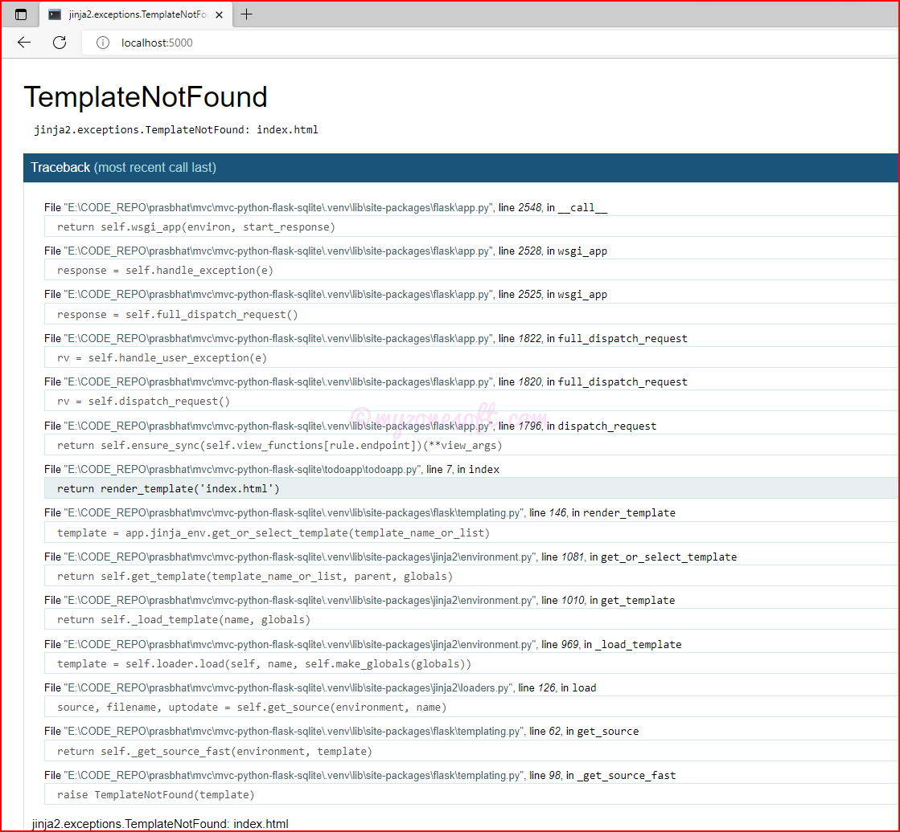
Index.html template Not Found Error
To fix this error, create a directory called templates. Then inside it, create a index.html file.
When we refresh the browser, if the changes are done properly, we should see the below page:
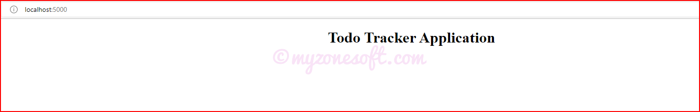
index.html template
Enhance the Existing Application
Let us enhance our application to use the Python - Flask as Backend Server for Rest API, SQLite as Database and Jinja Templates as HTML Templating Engine.
Database Setup
We will first setup the database for persisting the data. I will be using Relational Database known as SQLite Database since the sqlite3 module, which we will use to interact with the database, is readily available in the standard Python library.
You can extend this to use any other Relational Database and only Database configurations needs to be changed.
Now when we stop and restart the Server, we can see on the console that, 2 tables are created.
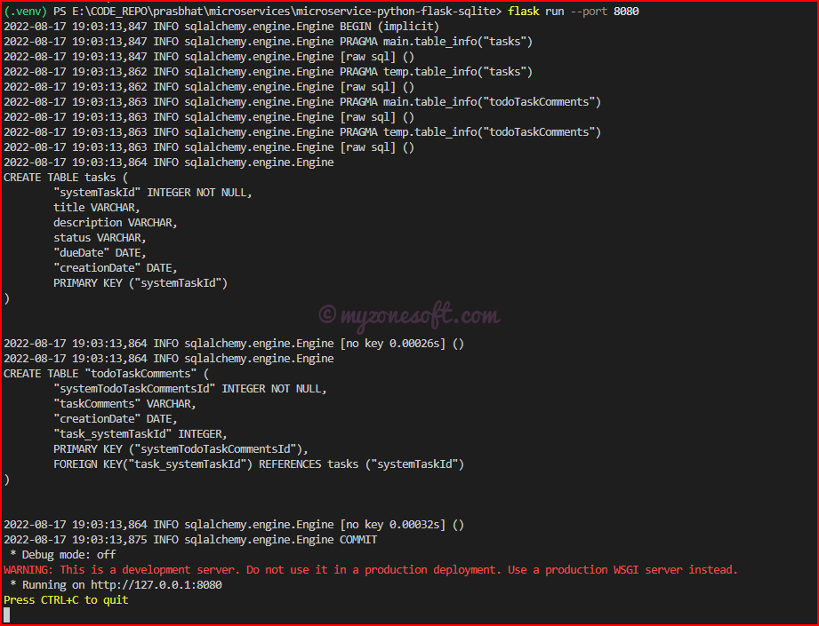
Tables Created in Database
Base Template File
Flask - Jinja Framework provides an option for creating the base template and extending it to all HTML files, so that we could move all common/repetitive code to this file.
Let us create a Base Template File - base.html.
This Base Template File will contain:
Bootstrap and Font-Awesome stylesheets
Navigation Menu for the all pages.
Block for Body content from Other templates.
Javascript for Bootstrap, jQuery, popper.js and any custom code.
1<!doctype html> 2<html>
3 <head>
4<!-- Bootstrap CSS --> 5 <linkrel="stylesheet"href="https://cdn.jsdelivr.net/npm/bootstrap@5.2.0/dist/css/bootstrap.min.css" 6integrity="sha384-gH2yIJqKdNHPEq0n4Mqa/HGKIhSkIHeL5AyhkYV8i59U5AR6csBvApHHNl/vI1Bx"crossorigin="anonymous">
7<!-- font-awesome css --> 8 <linkrel="stylesheet"href="https://cdnjs.cloudflare.com/ajax/libs/font-awesome/6.1.2/css/all.min.css">
9 </head>
10 <body>
11<!-- Start of navigation menu -->12 <divclass="container">
13 <navclass="navbar navbar-expand-lg navbar-light bg-light">
14 <divclass="container-fluid">
15 <ahref="{{ url_for('index')}}"class="navbar-brand">
16 <b>Todo Tracker Application</b></a>
17 <h4>{% block title %} {% endblock %}</h4>
18 <ulclass="nav nav-pills">
19 <liclass="nav-item"><ahref="{{ url_for('index')}}"class="nav-link"id="home"aria-current="page">Home</a></li>
20 <liclass="nav-item"><ahref="{{ url_for('create_task')}}"id="create"class="nav-link">Create Task</a></li>
21 </ul>
22 </div>
23 </nav>
24<!-- End of navigation menu -->25 <br/>
26 {% block content %} {% endblock %}
27<!-- It is always advisable to add the script tags inside body tag toward the end for faster rendering of the page -->28<!-- jQuery first, then Popper.js, then Bootstrap JS -->29 <scriptsrc="https://code.jquery.com/jquery-3.6.0.min.js"integrity="sha256-/xUj+3OJU5yExlq6GSYGSHk7tPXikynS7ogEvDej/m4="crossorigin="anonymous"></script>
30 <scriptsrc="https://cdnjs.cloudflare.com/ajax/libs/popper.js/2.6.0/umd/popper.min.js"31integrity="sha512-BmM0/BQlqh02wuK5Gz9yrbe7VyIVwOzD1o40yi1IsTjriX/NGF37NyXHfmFzIlMmoSIBXgqDiG1VNU6kB5dBbA=="crossorigin="anonymous"referrerpolicy="no-referrer"></script>
32 <scriptsrc="https://cdn.jsdelivr.net/npm/bootstrap@5.2.0/dist/js/bootstrap.min.js"33integrity="sha384-ODmDIVzN+pFdexxHEHFBQH3/9/vQ9uori45z4JjnFsRydbmQbmL5t1tQ0culUzyK"crossorigin="anonymous"></script>
34 </body>
35</html>
Display All Tasks as List
Let us first build the capability to display/view all tasks as list.
Update the HTML templates
Update the index.html template to extend the base.html
When we click on Delete button, Confirmation Box is displayed.
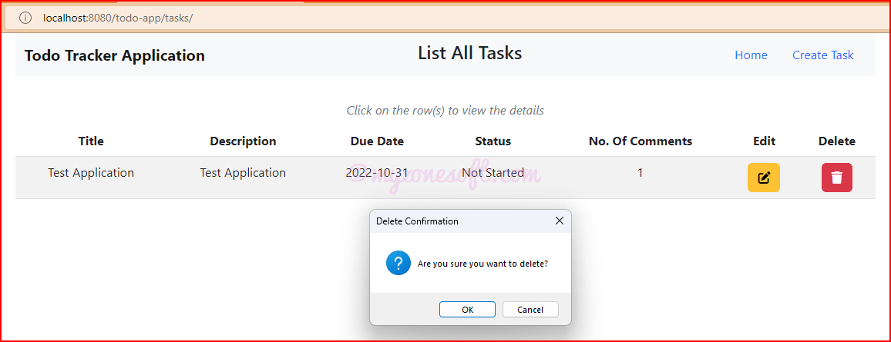
Confirmation Box For Delete
Homepage after the task is deleted.
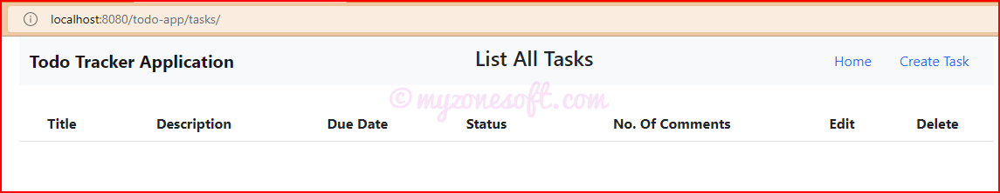
Home page After Delete Action
Conclusion
With this setup complete, we have come to the end of this article, where we have learnt:
How to develop a Model-View-Controller (MVC) application using Python Language with Flask Framework and Jinja Template.
Connecting to the SQLite Database to persist the data, using SQLAlchemy ORM.
Complete code for this project can be found at GitHub here. Go ahead and clone it.
Instructions on how to clone the code repository and run the project are provided on the GitHub project page.
About Prashanth Bhat
Prashanth Bhat has about 15+ years of Developing/Coding knowledge. He loves to work with Technology, learn new things and share his learnings with others. For comments/feedback you can reach here.